¶ Rear wheels are basically the same as front wheels except now you have some sort of drive like a chain, belt, or shaft. Simply remove the axle nut, loosen any pinch bolts and pull the axle out. On shaft drives and some chain drives the wheel will pull loose from the drive and come off leaving the drive portion attached to the swing arm. On others you have to remove the chain or push the wheel far enough forward to slip the chain off the sprocket. Now the wheel should come off to the rear and slip past the fender, at least sometimes it does.
In the old days they realized that sooner or later you, the owner/rider would have to take these wheels off. Now-a-days I guess they figure you will just get out the cell phone and call for help because a lot of bikes don't come with center stands. If yours doesn't have a center stand, you will have to figure out some way of holding the rear wheel off the ground. You may also have to remove mufflers and/or shocks, so you can get the wheel out.
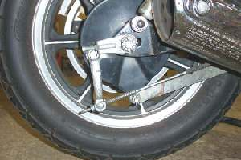 Remove the axle nut, brake rod nut and brake anchor bolt. |
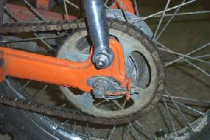 Remove the Axle nut, axle, and then the wheel. The sprocket stays on the swing arm. |
If the wheel has drum brakes, you will need to remove the bolt that anchors the brake to the frame. This anchor prevents the brake from spinning around the wheel when you apply the brake. Also, remove the brake rod adjusting nut. This nut adjusts the length of the brake rod. This length controls the amount of free play in the rear brake pedal. As you remove the axle, watch for any spacers. These spacers center the wheel in the swingarm. There may be one, two, or none.
A thing to remember on disk brakes. If you work the brake lever when there is no disk between the brake pads, they tend to pop out... not good. Maybe put a piece of steel or wood between the pads so any unauthorized brake usage does no harm.
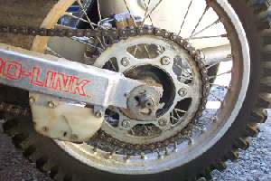 Loosen Nut, push forward and unhook chain. |
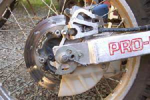 Pull wheel to the rear. |
A lot of dirt bikes have open slots to the rear of the swing arm so the wheel can be pulled off easily.
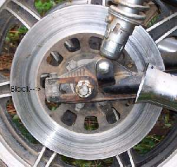 Some bikes have a removable block, held on with a bolt, on the rear of the swing arm. Remove the axle, push forward, pop off the chain, remove the block and then slide out the wheel to the rear. |
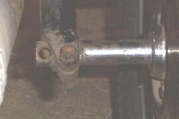 Some bikes have a pinch bolt on the rear axle. |
Some bikes (Certain models of Ducati, BMW, Honda and a few others) have a single side swing arm. the wheel is held on by one, three or four lug nuts or bolts. Remove any saddle bags and mufflers that are in the way, unscrew the lug nuts or bolts and remove the wheel.
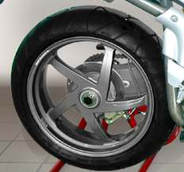 One lug nut. |
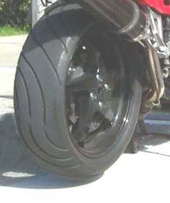 Four lug nuts |
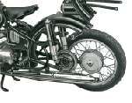

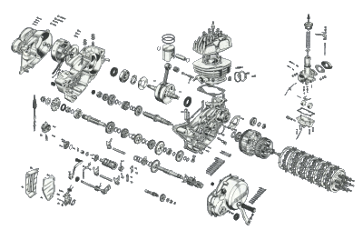 |
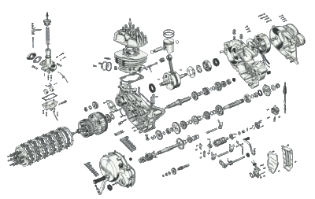 |
Copyright © 1999-2003 dansmc.com. All rights reserved.